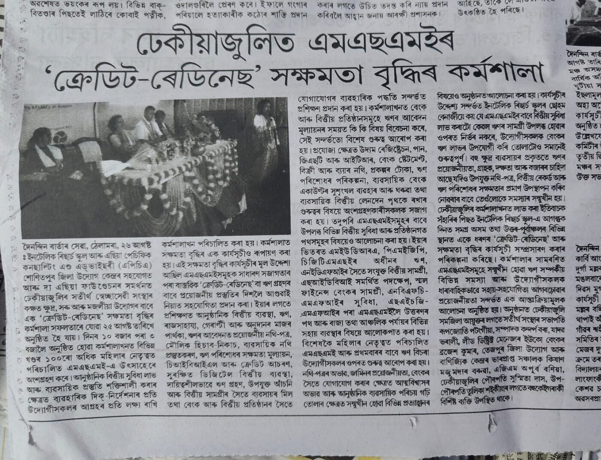

Our Vision
To become a trusted global partner in research and analytics — enabling individuals and organizations to generate meaningful insights and impactful knowledge.
Research · Data · Mentorship · Impact
The Research School (TRS) brings together academic research, market research, data, mentorship, training, and Artificial Intelligence — helping academicians, PhD and DBA scholars, universities, and organizations generate reliable evidence and turn it into meaningful outcomes.

Who we are
Our philosophy is simple: research should be rigorous, practical, and relevant.
Our Vision
To become a trusted global partner in research and analytics — enabling individuals and organizations to generate meaningful insights and impactful knowledge.
Our Mission
To help academicians, scholars, institutions, and organizations address their research questions, generate reliable evidence, build lasting research capability, and translate insights into meaningful outcomes — with the responsible use of AI.
What we do
Research design, literature reviews, methodology, analysis, thesis mentoring, and publication-oriented support for faculty, PhD, and DBA scholars.
Learn moreSurveys, respondent recruitment, consumer and brand studies, focus groups, competitive intelligence, and fieldwork for evidence-based decisions.
Learn moreHands-on programmes on SPSS, PLS-SEM, SmartPLS, qualitative tools, academic writing, and publication.
Learn moreResponsible use of AI for literature reviews, research workflows, writing, data analysis, teaching, and assessment.
Learn moreOur approach
We don't begin with a fixed template. We follow a structured path from question to outcome.
We start with your research question or organizational problem — its context and constraints.
We identify the methodology, sample, and instruments the problem actually needs.
We gather primary or secondary data with rigour and ethical care.
We apply the right quantitative or qualitative analysis to turn data into evidence.
We build your capability along the way, not simply deliver an output.
We help turn findings into a thesis, a publication, a programme, or a decision.
Who we work with
Research design, data collection, analysis, writing, publication, and research capability building.
Structured mentoring from research idea and methodology to thesis and publication.
Faculty development, research methodology programmes, AI in education, and institutional research initiatives.
Market research, consumer insights, data collection, customer research, and evidence-based decisions.

Featured engagement
With Asia Pacific Consulting & Advisory, in collaboration with the Industries and Commerce Department, Government of Assam, and with support from The Asia Foundation, Intellique Research School ran workshops across Guwahati and Tezpur that brought almost 200 women-led MSMEs practical guidance on formal finance, credit documentation, CIBIL, and responsible borrowing.
See the press coverageOur belief
At The Research School, our goal is to support that entire journey.
FAQ
The Research School (TRS) is a research and knowledge platform that brings together academic research, market research, data, mentorship, training, and Artificial Intelligence. It is based in Noida, India, and is a subsidiary of Intellique Research School Pvt Ltd.
TRS works with academicians and researchers, PhD and DBA scholars, universities and educational institutions, and companies and organizations that need reliable evidence for decision-making.
Structured mentoring across the research journey: research problem identification and design, literature reviews and gap identification, research methodology, quantitative and qualitative analysis, data collection, thesis and dissertation mentoring, and publication-oriented research support.
Yes. TRS runs primary data collection, survey design and administration, respondent recruitment, consumer and customer experience studies, brand perception research, focus groups and interviews, competitive intelligence, and research fieldwork for companies, institutions, and academicians.
Workshops and Faculty Development Programmes cover tools and techniques such as SPSS, PLS-SEM and SmartPLS, structural equation modelling, qualitative research tools, literature review tools, data analysis, research design, academic writing, and research publication, with an emphasis on hands-on practice.
TRS helps researchers, faculty, and institutions use AI responsibly for literature reviews, research workflows, academic writing, data analysis, teaching, and assessment. AI should augment human expertise, critical thinking, and academic judgement rather than replace them.
Use the Contact Us form on this website or email intelliqueresearchschool@gmail.com. Every engagement begins by understanding your research question or business problem; we then propose a scope, method, and timeline.
Share your objectives and we'll propose a scope, method, and timeline.